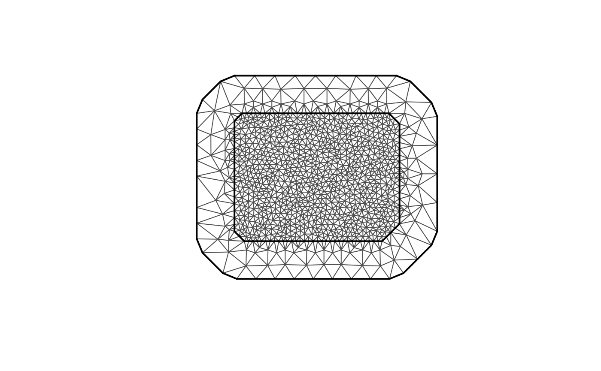
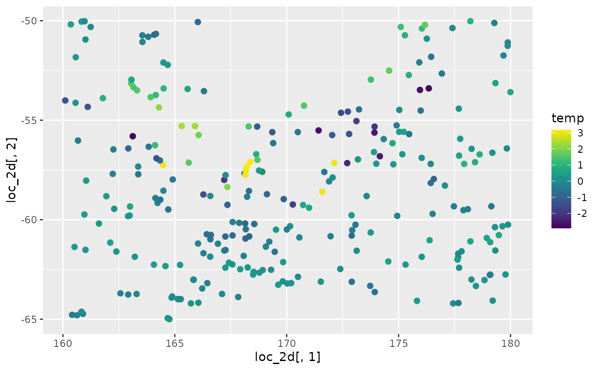

Ngme2 SPDE Matern model
SPDE-model.RmdIn this vignette, we will introduce the SPDE Matérn model in
ngme2. First we introduce a little about Gaussian
process.
Gaussian process in geostatistics
Gaussian process and random fields covers different methods for representing spatial and spatial-temporal dependence structures. Gaussian fields (GF) have a dominant role in spatial statistics and especially in the traditional field of geostatistics.
A common geostatistical model is given by \[ Y_i = x(\mathbf{s}_i) + \varepsilon_i, \quad i=1,\ldots,N, \quad \varepsilon_i\sim N(0, \sigma^2),\] \[x(\mathbf{s}) \sim GP\left(\sum_{k=1}^{n_b} b_k(\mathbf{s})w_k, c(\mathbf{s},\mathbf{s}')\right),\] where \(N\) is the number of spatial observations, \(GP(m,c)\) stands for a Gaussian process with mean function \(m\) and covariance function \(c\), \(n_b\) is the number of basis functions, \(\{b_k(\cdot)\}_{k=1}^{n_b}\) are basis functions, \(w_k\) are weights to be estimated and \(c(\cdot,\cdot)\) is a covariance function.
A popular and flexible covariance function for random fields on \(\mathbb{R}^d\) is the Matérn covariance function:
\[ c(\mathbf{s}, \mathbf{s}') = \frac{\sigma^2}{\Gamma(\nu)2^{\nu-1}}(\kappa \|\mathbf{s}-\mathbf{s}'\|)^\nu K_\nu(\kappa\|\mathbf{s}-\mathbf{s}'\|), \]
where \(\Gamma(\cdot)\) is the Gamma function, \(K_\nu(\cdot)\) is the modified Bessel function of the second kind, \(\nu>0\) controls the correlation range and \(\sigma^2\) is the variance. Finally, \(\nu>0\) determines the smoothness of the field.
Usually, the model parameters are estimated via maximum likelihood estimation. The main drawback with this approach is that the computational time needed in order to perform statistical inference usually scales as \(\mathcal{O}(N^3)\).
The SPDE approach with Gaussian noise
It is well-known (Whittle, 1963) that a Gaussian process \(u(\mathbf{s})\) with Matérn covariance function solves the stochastic partial differential equation (SPDE)
\[\begin{equation}\label{spde} (\kappa^2 -\Delta)^\beta u = \mathcal{W}\quad \hbox{in } \mathcal{D}, \end{equation}\] where \(\Delta = \sum_{i=1}^d \frac{\partial^2}{\partial_{x_i^2}}\) is the Laplacian operator, \(\mathcal{W}\) is the Gaussian spatial white noise on \(\mathcal{D}=\mathbb{R}^d\), and \(4\beta = 2\nu + d\).
Inspired by this relation between Gaussian processes with Matérn covariance functions and solutions of the above SPDE, Lindgren et al. (2011) constructed computationally efficient Gaussian Markov random field approximations of \(u(\mathbf{s})\), where the domain \(\mathcal{D}\subsetneq \mathbb{R}^d\) is bounded and \(2\beta\in\mathbb{N}\). The approximate solutions of the SPDE are obtained through a finite element discretization.
Finite element approximation
We will now provide a brief description of the finite element method they used. To make the description simpler we will consider the nonfractional SPDE given by \[(\kappa^2 - \Delta) u(\mathbf{s}) = \mathcal{W}(\mathbf{s}),\] on some bounded domain \(\mathcal{D}\) in \(\mathbb{R}^d\). The Laplacian operator is augmented with boundary conditions. Usually one considers Dirichlet, in which the process is zero on the boundary of \(\mathcal{D}\), or Neumann, in which the directional derivarives of the process in the normal directions is zero on the boundary of \(\mathcal{D}\).
The equation is interpreted in the following weak sense: for every function \(\psi(\mathbf{s})\) from some suitable space of test functions, the following identity holds \[\langle \psi, (\kappa^2-\Delta)u\rangle_{\mathcal{D}} \stackrel{d}{=} \langle \psi, \mathcal{W}\rangle_{\mathcal{D}},\] where \(\stackrel{d}{=}\) means equality in distribution and \(\langle\cdot,\cdot\rangle_{\mathcal{D}}\) is the standard inner product in \(L_2(\mathcal{D})\), \(\langle f,g\rangle_{\mathcal{D}} = \int_\mathcal{D} f(\mathbf{s})g(\mathbf{s}) d\mathbf{s}.\)
The finite element method (FEM) consists on considering a finite dimensional space of test functions \(V_n\). In the Galerkin method, we consider \(V_n = {\rm span}\{\varphi_1,\ldots,\varphi_n\}\), where \(\varphi_i(\mathbf{s}), i=1,\ldots, n\) are piecewise linear basis functions obtained from a triangulation of \(\mathcal{D}\).
Then, we write approximate the solution \(u\) by \(u_n\), where \(u_n\) is written in terms of the basis functions as \[u_n(\mathbf{s}) = \sum_{i=1}^n w_i \varphi_i(\mathbf{s}).\]
We thus obtain the system of linear equations \[\left\langle \varphi_j, (\kappa^2 - \Delta)\left(\sum_{i=1}^n w_i\varphi_i\right)\right\rangle_{\mathcal{D}} \stackrel{d}{=} \langle \varphi_j, \mathcal{W}\rangle_{\mathcal{D}},\quad\hbox{for } j=1,\ldots,n.\]
The right hand side can be shown that \[(\langle \varphi_1, \mathcal{W}\rangle_{\mathcal{D}}, \ldots, \langle \varphi_n, \mathcal{W}\rangle_{\mathcal{D}}) \sim N(0, \mathbf{C}),\] where \(\mathbf{C}\) is an \(n\times n\) matrix with \((i,j)\)th entry given by \[\mathbf{C}_{i,j} = \int_{\mathcal{D}} \varphi_i(\mathbf{s})\varphi_j(\mathbf{s}) d\mathbf{s}.\] The matrix \(\mathbf{C}\) is known as the mass matrix in FEM theory.
By using Green’s first identity, the left hand side is \[ \begin{array}{ccl} \left\langle \varphi_j, (\kappa^2 - \Delta)\left(\sum_{i=1}^n w_i\varphi_i\right)\right\rangle_{\mathcal{D}} &=& \sum_{i=1}^n \langle \varphi_j, (\kappa^2 - \Delta)w_i\varphi_i\rangle_{\mathcal{D}}\\ &=& \sum_{i=1}^n (\kappa^2 \langle \varphi_j, \varphi_i\rangle_{\mathcal{D}} + \langle \nabla \varphi_j, \nabla \varphi_i\rangle_{\mathcal{D}}) w_i, \quad j=1,\ldots, n, \end{array} \] where the boundary terms vanish due to boundary conditions (for both Dirichlet and Neumann). We can then rewrite the last term in matrix form as \[(\kappa^2 \mathbf{C} + \mathbf{G})\mathbf{w},\] where \(\mathbf{w} = (w_1,\ldots,w_n)\) and \(\mathbf{G}\) is an \(n\times n\) matrix with \((i,j)\)th entry given by \[\mathbf{G}_{i,j} = \int_{\mathcal{D}} \nabla \varphi_i(\mathbf{s})\nabla\varphi_j(\mathbf{s})d\mathbf{s}.\] The matrix \(\mathbf{G}\) is known in FEM theory as stiffness matrix.
Putting everything together, we have that \[(\kappa^2 \mathbf{C} + \mathbf{G}) \mathbf{w} \sim N(0,\mathbf{C}).\] Therefore, \(\mathbf{w}\) is a centered Gaussian variable with precision matrix given by \[\mathbf{Q} = (\kappa^2 \mathbf{C}+\mathbf{G})^\top \mathbf{C}^{-1}(\kappa^2 \mathbf{C}+\mathbf{G}).\]
Computational advantages of the SPDE approach
For spatial problems, the computational cost usually scales as \(\mathcal{O}(n^{3/2})\), where \(n\) is the number of basis functions. This should be compared to the \(\mathcal{O}(N^3)\) of the Gaussian random field approach.
This implies in accurate approximations which drastically reduces the computational cost for sampling and inference.
The SPDE approach with non-Gaussian noise
Then we will describe how to generalize this approach with non-Gaussian noise. Our goal now is to describe the SPDE approach when the noise is non-Gaussian. The motivation for handling non-Gaussian noise comes from the fact that many features cannot not be handled by Gaussian noise. Some of these reasons are:
- Skewness;
- Heavier tails;
- Jumps in the sample paths;
- Asymmetries in the sample paths.
Non-Gaussian Matérn fields
The idea is to replace the Gaussian white noise \(\mathcal{W}\) in the SPDE by a non-Gaussian white noise \(\dot{\mathcal{M}}\): \[(\kappa^2 - \Delta)^\beta u = \dot{\mathcal{M}}.\] The solution \(u\) will have Matérn covariance function, but their marginal distributions will be non-Gaussian.
We will consider the same setup. More precisely, we consider \(V_n = {\rm span}\{\varphi_1,\ldots,\varphi_n\}\), where \(\varphi_i(\mathbf{s}), i=1,\ldots, n\) are piecewise linear basis functions obtained from a triangulation of \(\mathcal{D}\) and we approximate the solution \(u\) by \(u_n\), where \(u_n\) is written in terms of the basis functions as \[u_n(\mathbf{s}) = \sum_{i=1}^n w_i \varphi_i(\mathbf{s}).\] In the right-hand side we obtain a random vector \[\mathbf{f} = (\dot{\mathcal{M}}(\varphi_1),\ldots, \dot{\mathcal{M}}(\varphi_n)),\] where the functional \(\dot{\mathcal{M}}\) is given by \[\dot{\mathcal{M}}(\varphi_j) = \int_{\mathcal{D}} \varphi_j(\mathbf{s}) d\mathcal{M}(\mathbf{s}).\] By considering \(\mathcal{M}\) to be a type-G Lévy process, we obtain that \(\mathbf{f}\) has a joint distribution that is easy to handle.
We say that a Lévy process is of type G if its increments can be represented as location-scale mixtures: \[\gamma + \mu V + \sigma \sqrt{V}Z,\] where \(\gamma, \mu\) are parameters, \(Z\sim N(0,1)\) and is independent of \(V\), and \(V\) is a positive infinitely divisible random variable.
Therefore, given a vector \(\mathbf{V} = (V_1,\ldots,V_n)\) of independent stochastic variances (in our case, positive infinitely divisible random variables), we obtain that \[\mathbf{f}|\mathbf{V} \sim N(\gamma + \mu\mathbf{V}, \sigma^2{\rm diag}(\mathbf{V})).\] So, if we consider, for instance, the non-fractional and non-Gaussian SPDE \[(\kappa^2 - \Delta) u = \dot{\mathcal{M}},\] we obtain that the FEM weights \(\mathbf{w} = (w_1,\ldots,w_n)\) satisfy \[\mathbf{w}|\mathbf{V} \sim N(\mathbf{K}^{-1}(\gamma+\mu\mathbf{V}), \sigma^2\mathbf{K}^{-1}{\rm diag}(\mathbf{V})\mathbf{K}^{-1}),\] where \(\mathbf{K} = \kappa^2\mathbf{C}+\mathbf{G}\) is the discretization of the differential operator.
The NIG model
We will delve into more details now by considering, as example, the NIG model.
First, we say that a random variable \(V\) follows an inverse Gaussian distribution with parameters \(\eta_1\) and \(\eta_2\), denoted by \(V\sim IG(\eta_1,\eta_2)\) if it has probability density function (pdf) given by \[\pi(v) = \frac{\sqrt{\eta_2}}{\sqrt{2\pi v^3}} \exp\left\{-\frac{\eta_1}{2}v - \frac{\eta_2}{2v} + \sqrt{\eta_1\eta_2}\right\},\quad \eta_1,\eta_2>0.\] We can generate samples of inverse Gaussian distributions with parameters \(\eta_1\) and \(\eta_2\) by generating samples from the generalized inverse Gaussian distribution with parameters \(p=-1/2\), \(a=\eta_1\) and \(b=\eta_2\). We can use the rGIG function to generate samples from the generalized inverse Gaussian distribution.
If \(V\sim IG(\eta_1,\eta_2)\), then \(X = \gamma +\mu V + \sigma \sqrt{V}Z\), with \(Z\sim N(0,1)\), being independent of \(V\), then \(X\) follows a normal inverse Gaussian (NIG) distribution and has pdf \[\pi(x) = \frac{e^{\sqrt{\eta_1\eta_2}+\mu(x-\gamma)/\sigma^2}\sqrt{\eta_2\mu^2/\sigma^2+\eta_1\eta_2}}{\pi\sqrt{\eta_2\sigma^2+(x-\gamma)^2}} K_1\left(\sqrt{(\eta_2\sigma^2+(x-\gamma)^2)(\mu^2/\sigma^4+\eta_1/\sigma^2)}\right),\] where \(K_1\) is a modified Bessel function of the third kind. In this form, the NIG density is overparameterized, and we therefore set \(\eta_1=\eta_2=\eta\), which results in \(E(V)=1\). Thus, one have the parameters, \(\mu, \gamma\) and \(\eta\).
The NIG model thus assumes that the stochastic variance \(V_i\) follows an inverse Gaussian with parameters \(\eta\) and \(\eta h_i^2\), where \(h_i = \int_{\mathcal{D}} \varphi_i(\mathbf{s}) d\mathbf{s}.\)
library(INLA)
#> Loading required package: Matrix
#> Loading required package: foreach
#> Loading required package: parallel
#> Loading required package: sp
#> This is INLA_23.02.04 built 2023-02-04 09:22:22 UTC.
#> - See www.r-inla.org/contact-us for how to get help.
#> - To enable PARDISO sparse library; see inla.pardiso()
library(ngme2)
#>
#> Attaching package: 'ngme2'
#> The following object is masked from 'package:INLA':
#>
#> f
library(ggplot2)
library(plyr)
library(dplyr)
#>
#> Attaching package: 'dplyr'
#> The following objects are masked from 'package:plyr':
#>
#> arrange, count, desc, failwith, id, mutate, rename, summarise,
#> summarize
#> The following objects are masked from 'package:stats':
#>
#> filter, lag
#> The following objects are masked from 'package:base':
#>
#> intersect, setdiff, setequal, union
library(viridis)
#> Loading required package: viridisLiteUsing SPDE Matérn model in ngme2
Specification
Use model_matern to specify the SPDE Matérn model, see
?model_matern for more details. Consider the following
examples (both 1d and 2d cases):
# 1d example
loc <- c(1.1, 2.2, 3.5, 4.7)
mesh_1d <- inla.mesh.1d(1:10)
m1 <- model_matern(loc = loc, mesh = mesh_1d)
# 2d example
data(argo_float)
head(argo_float)
#> lat lon sal temp
#> 1 -64.078 175.821 -0.0699508100 0.4100305
#> 2 -63.760 162.917 -0.0320931260 -0.2588680
#> 3 -63.732 163.294 -0.0008063143 -0.1151362
#> 4 -63.700 162.568 -0.0209534220 -0.2378965
#> 5 -63.269 169.623 0.0409914840 0.3375048
#> 6 -63.113 171.526 0.0269408910 0.2145556
# take longitude and latitude to build the mesh
max.edge <- 1
bound.outer <- 5
loc_2d <- unique(cbind(argo_float$lon, argo_float$lat))
# nrow(loc) == nrow(dat) no replicate
argo_mesh <- inla.mesh.2d(loc = loc_2d,
# the inner edge and outer edge
max.edge = c(1,5),
cutoff = 0.3,
# offset extension distance inner and outer extenstion
offset = c(max.edge, bound.outer)
)
plot(argo_mesh)
Specifying a 2d Matérn model is also very simple:
argo_spde <- model_matern(
loc = loc_2d,
mesh = argo_mesh
)Simulation
Doing simulation is easy, we simply provide the model, and that’s it!
simulate(m1)
#> [1] -0.495982764 -0.438953760 -0.940582512 -0.751046563 0.172417530
#> [6] -0.111404328 0.592070205 0.417702208 -0.005324487 -0.379873020
#> attr(,"noise")
#> Noise type - normal
#> Noise parameters:
#> sigma = 1
simulate(argo_spde)[1:20]
#> [1] -0.36236605 0.06950848 -0.58964281 -0.07958500 -0.49119070 0.05329682
#> [7] -0.10526759 0.13719711 -0.20761969 0.09995411 -0.14168905 0.04403162
#> [13] 0.11758504 0.06306374 -0.11309436 -0.12882337 0.05905417 -0.18415878
#> [19] 0.21087458 -0.22829800Estimation
Let’s use the previous argo_float spatial (2d) example.
First we explore the how the data look like:
# tempearture
ggplot(data=argo_float) +
geom_point(aes(
x = loc_2d[, 1], y = loc_2d[, 2],
colour = temp
), size = 2, alpha = 1) +
scale_color_gradientn(colours = viridis(100))
# salinity
ggplot(data=argo_float) +
geom_point(aes(
x = loc_2d[, 1], y = loc_2d[, 2],
colour = sal
), size = 2, alpha = 1) +
scale_color_gradientn(colours = viridis(100))Next, we specfiy a model formula, and then fit the model.
formula <- temp ~ sal + f(model = argo_spde, noise = noise_normal(), debug = FALSE)
out <- ngme(
formula = formula,
family = "nig",
data = argo_float,
seed = 7,
control = ngme_control(
estimation = TRUE,
n_parallel_chain = 4,
iterations = 100,
print_check_info = FALSE
),
debug = FALSE
)
#> Starting estimation...
#> Estimation done!
#> Starting posterior sampling...
#> Note: Use ngme$latents[[model_name]]$W to access the posterior mean of process
#> Posterior sampling done!
out
#> *** Ngme object ***
#>
#> Fixed effects:
#> beta = -0.0132, 7.1249
#>
#> Measurement noise:
#> Noise type - nig
#> Noise parameters:
#> mu = -0.363
#> sigma = 1.16
#> nu = 0.102
#>
#>
#> Latent models:
#> $field1
#> Ngme model: matern
#> Model parameters:
#> kappa = 0.825
#>
#> Noise type - normal
#> Noise parameters:
#> sigma = 0.825Prediction
Doing prediction with ngme is simple, simply put the
value at preidcted location as NA.
The ngme function firstly will estimate the model using
the known data. After the estimation, the estimaed value and the samples
given by gibbs sampler will be used to give a linear predictor.
See the vignette Prediction and estimation for details.